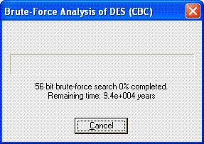

You can reach this dialog via the menu entry Analysis \ Symmetric Encryption (modern) and the according sub menu.
This dialog is used to enter the key space to be searched through for keys in a Brute-force attack on the following encryption algorithms:
After you have entered the searchspace of the key search, you can start the brute-force attack by clicking on the Start button or pressing the Return key. To terminate the attack, click on Cancel.
The keys are entered in hexadecimal form.
For unknown positions one simply enters a *. Thus, if you enter "10 ** 23 00 ... 00" a total of (2^4)*(2^4) = 256 keys will be searched through. These are
Five unknown positions mean, that maximal 2^(4*5) = 1,048,576 keys have to be searched through.
The running time is mainly influenced by the number of unknown positions. Each unknown position increases the running time by the factor 16. The running time also varies for the different encryption algorithms and key lengths. It also depends on the number of document bytes that are used in the entropy test, see dialog Analysis Options for details:
Remark 1:
When applying brute-force analysis for DES (triple DES), a key length of 64 (128) bit is shown. Because these methods use 1 bit per byte as parity bit, the effective key length is only 56 (112) bit!
Remark 2:
Having the possibility to enter any number of stars (this enables you to search through the whole key space) does not mean that CrypTool can be used as a hacker tool.
This only gives the user an impression, how huge time intervals are necessary (e.g. 10^26 years for a whole 128 bit key), if the key length is big enough and the method works well.
